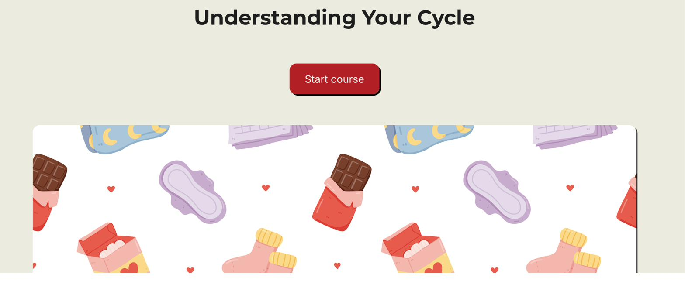
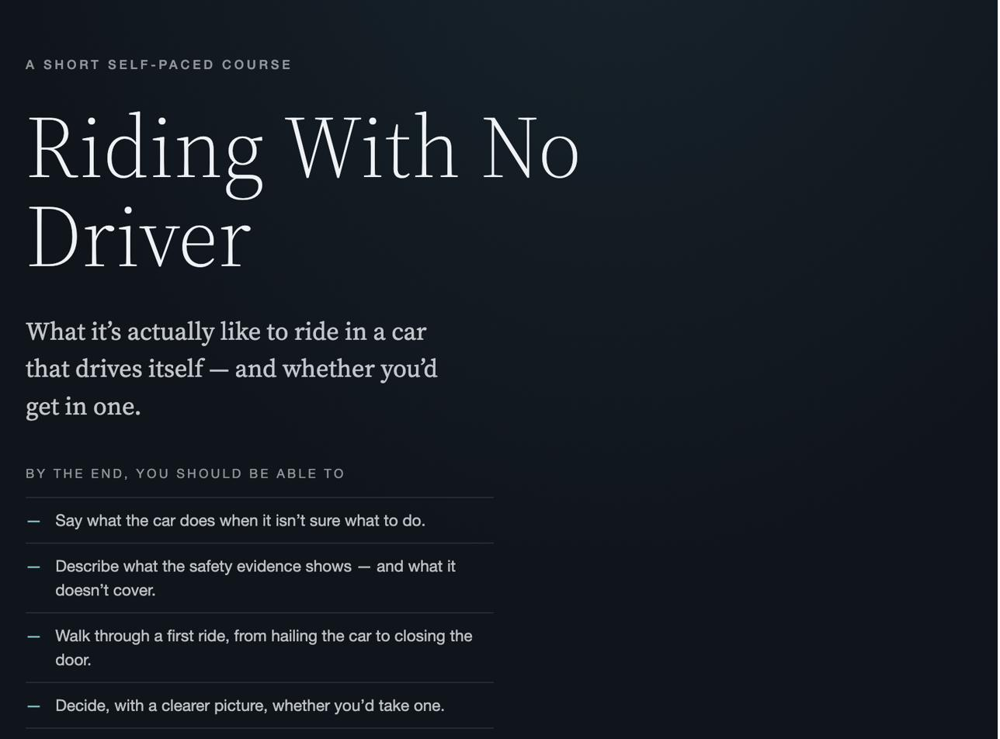
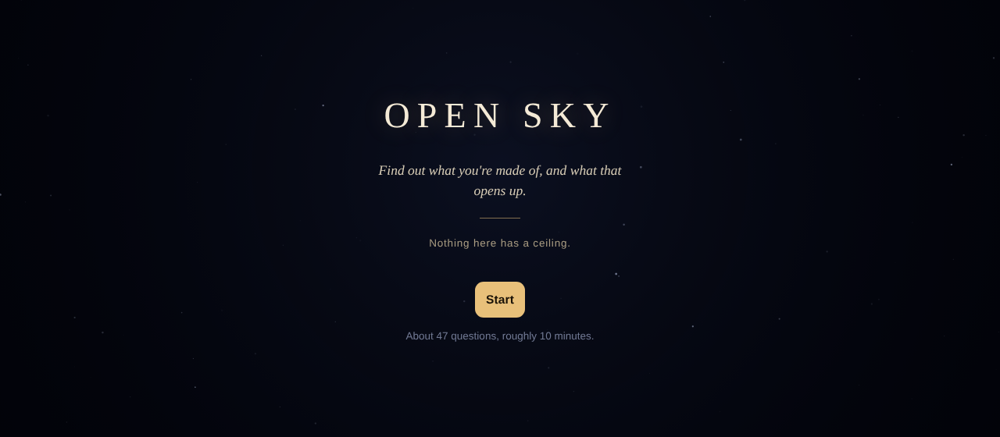
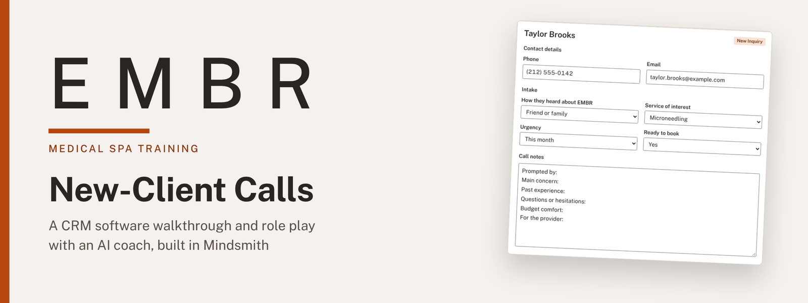

Welcome to the Lab.
This is where I share what I'm actively building — the messy version, not the case-study-ready one. Peek into what's in motion.
Current projects and journal
Understanding Your Cycle
A course about what happens in your body during puberty and the menstrual cycle — and how to recognize when to reach out for extra support. Built to be accessible on its own, so questions can be answered whenever they come up rather than waiting for someone to bring it up first.
Module 1 (Body & Cycle) is drafted. Module 2 (Products) is underway. Built in Parta.

What's on my mind
- Medical accuracy vs. approachability. Making sure the medical parts are accurate while keeping the tone warm.
- Interaction density. Module 1 has a lot going on — flip cards, drag-and-drops, click-to-reveals, knowledge checks. Feels right for the content, but I'm watching for cognitive load.
- Where does a course like this go once it's finished? Public web, partnership with an organization, something else?
Riding with No Driver
A course for anyone who's said "oh no, I can't do it" when autonomous vehicles come up. Because they're coming — sooner than later — and most of the reluctance I hear isn't really about the cars. It's about not knowing what's actually happening under the hood.
This one is about getting comfortable with the concept: what autonomous vehicles are, how they've been built and tested, and why "hey, here it is, whatever happens" isn't remotely how the technology works. A second course on the deeper technology is planned separately.
Built as a first pass at a resource for people who probably wouldn't seek this information out on their own — the ones who wouldn't land on Waymo's site unprompted, but might click through if it showed up somewhere friendlier.

What's on my mind
- Does this actually meet the objective? The goal is comfort and understanding for someone reluctant. But I'm not fully sure yet whether the content moves the needle — that's something I need real feedback on.
- Is a course the right format? There's no shortage of quick videos and explainers about autonomous vehicles. But for someone who's actively uncomfortable with the technology, does a walk-through course reach them better than a two-minute clip — or worse? Still figuring out.
- Scoping the second course. The deeper technology dive is planned as a separate course, but I'm still brainstorming what that actually covers — sensor systems, machine learning, edge cases, safety testing, the regulatory landscape. Trying to figure out what someone would need to feel like they understand the tech, not just heard about it.
- How much of my own experience belongs in the course? I have real hands-on time with autonomous features. That's useful context — but this course isn't a personal essay, and I don't want it to read like an endorsement of one company. Figuring out how to draw on that experience honestly without making the course about my car.
Open Sky
Nothing here has a ceiling.
This started as a conversation with my friend Tara — about strengths, skills, experience, and how much better work goes when you lean into what you're actually good at. We kept coming back to the same thing: the assessments that pull all of it together — strengths, skills, interests, values — tend to live behind a campus or a paywall. The free ones that anyone can reach are usually thin.
So I built the one I wanted. A skills-based career quiz on real O*NET and BLS data — free, private, no account, no email. It brings together the whole picture, including the parts most quizzes skip: how much money actually motivates you, and whether a company's values line up with your own. Results come back as a sky of star-shaped role matches rather than a ranked list. It's for anyone at one of those moments — wondering what they're doing, what they could be doing, or what they want to be doing next.

What's on my mind
- The parts other quizzes leave out. Money motivation and values alignment are huge in real career decisions — some people won't take a role that isn't lucrative, others won't work for a company they don't believe in. Both belong in the picture, not treated as afterthoughts.
- A bias I found in the scoring. The math was quietly connecting work-value answers to the status level of matched roles — people who valued stability were being steered toward lower-status jobs while people who picked risk got the high-status ones. It contradicted the whole point of the quiz, and no one designed it that way; it emerged from the data. Caught, fixed.
- What happens after the results. Most free assessments hand you a list and stop. The rigorous ones assume you'll go see a career advisor to make sense of it — which leaves out anyone without a campus or an alumni network to walk into. Open Sky's results screen carries a "where to start" section written for that person: real exploration steps matched to the specific results the sky returned.
EMBR Medical Spa: Inquiry Intake
My entry in the November 2026 eLearning Design Challenge from The eLearning Designer's Academy, sponsored by Mindsmith, is EMBR Medical Spa: Inquiry Intake, which is for client care coordinators at a made-up medical spa. In the lesson, New-Client Calls, the employee first follows a guided walkthrough with a caller named Taylor Brooks in a CRM that I built, and then takes a role play call from a second caller, Morgan Ellis, while an AI coach checks both what is said and what is entered in the CRM.
The role play focuses on four habits that a new coordinator is likely to skip under pressure. These are answering the price question with context and then asking what made the caller start thinking about the treatment, handing clinical questions to the provider, writing call notes that another coordinator could use, and agreeing on a consultation day and time before confirming it in writing.
I chose this task because I worked in sales before, and I know how much it matters for people to understand the tools they use with clients. At a medical spa the first call also brings in health related information, so I wanted learners to work through recommending a service to a caller who is hesitant or does not know much about it.

What's on my mind
- Whether the hard moments feel real. The difficult moments in Morgan's call come from published advice for medical spa front desks and from my own judgment, and no working coordinator has told me which of them feel real to someone who does the job.
- Where the coordinator stops. The course has the coordinator hand clinical questions to the provider, but what non-clinical staff may say about treatments differs from state to state and I did not find a source that lays it out, so this is practice in handing the question over and not legal guidance.
- The word intake. In EMBR, intake means the fields a coordinator fills in on an inquiry, while at many medical spas the same word means the patient's medical forms, and I have not asked a working coordinator which meaning they would expect.
Everything about EMBR is fictional, every name, number and price in the practice CRM is made up, and nothing you enter is saved or sent. The course needs a desktop or laptop computer and shares your screen with the coach. The role play records the session, so when your browser asks what to share, choose only the practice tab.
Try the course (review link) (opens in new window)Design record
This course is for a made-up company, so there is no client and there are no learner data. Each finding below is labeled with how I know it.
Needs analysis What I found, and how I know it
| Question | What I found | Basis |
|---|---|---|
| What is the gap? | The information gathered on a first call is what carries the next step forward, some of it is health related, and the hard part is recommending a service to a caller who is hesitant or does not know much about it. I also think it matters a great deal that people understand the tools they use with clients. | My observationFrom my own sales work. |
| Who is it for? | New client care coordinators at a made-up medical spa, some brand new to the work and some who have used a CRM before and are new to this one. | InferenceI assumed this audience. No coordinators were interviewed. |
| Are the habits real? | The habits come from published advice for medical spa front desks, such as not quoting a price with no questions and leaving medical advice to the provider. I chose the checks from a longer list of likely mistakes. | Published adviceVendor, trade, training and law firm pages. No independent studies, and none from working coordinators. |
| Is training the answer? | Practice with feedback seems to fit a call that has to go well under pressure, since the role play lets a learner do the work and see where it slips. I did not test that, because there is no performance data or baseline for a made-up company. | Inference |
| What I couldn't find | A working coordinator who confirmed that these habits and words match real calls, a source on what non-clinical staff may say about treatments in each state, an independent study of when to give a price on a first call, and a benchmark for what good call notes look like. | Not foundLimited searching, so I cannot rule them out. |
Discovery The decisions I made, and what I set aside
These are decisions I made while building, with the option I set aside each time.
| Decision | Started with | Chose | Option I didn't take, and why |
|---|---|---|---|
| Lesson format | A standalone Conversation lesson | A regular lesson with a Walkthrough tile and a Role Play tile | The standalone Conversation lesson, because it holds only one tile. |
| The CRM | A well-known CRM tool that I have used in past roles | A practice CRM that I built | A known CRM, because I wanted to customize the intake for a medical spa and work out what a place like that needs in the process. |
| Price timing | Asking questions before giving the price | Answering the price question with context, then asking what made the caller start thinking about the treatment | Asking first. The published advice splits three ways and none of it is independent research, so I kept the order that matches the lesson's first goal and still has the coordinator ask questions right after the price. |
| Evidence of learning | The role play scorecard and an ungraded reflection page | The same, with no separate quiz | A quiz after the role play, because the challenge asks for practice of a real task in a small scope, and a new graded item late in the build would have needed a retest. |
Who did what What Claude drafted and what I decided
I also used this project to test what AI can do in a build like this. Most of that happened in Mindsmith, where I used the AI credits supplied through the challenge to build and edit the course with the Mindsmith agent. I used Claude as well to push its abilities, for the storyboard, brainstorming and research, the code for the practice CRM, some edits in the Mindsmith editor, and drafts of many of the coordinator’s and Morgan’s lines, all of which I reviewed and approved or changed.
I was involved in every part of the process, from choosing the scenario and the company to deciding how the CRM and the course pages look. I also caught problems in the drafts. One page told learners they would “see” the key points, which assumes everyone takes in the course by sight, so I changed it to “go over” and “use.” A line before the role play asked learners to match Morgan’s quick pace, but Morgan is relaxed and a little hesitant, so I reworded it to notice her pace and how she seems to be feeling, which also works for someone who reads her replies instead of listening. I also noticed that the wave transitions between sections were cutting off the decorative rings behind the cards, which made those pages look unfinished, so I had the rings redrawn smaller.
Checks and open items What I tested, and what I haven't
This is the status as of November 24, 2026. Claude ran the browser checks on my computer in a window set to the width named, so none of them was on a real phone.
| Check | What I found | Result |
|---|---|---|
| Practice CRM at phone width, with extra text spacing | On Leads, Contacts, Tasks, Inbox and a contact record, the page did not scroll sideways and no text was cut off. | PassedWindow set to 320 px wide, November 21 and 22. |
| Practice CRM by keyboard | Tab reached every control in reading order on those same screens, each one showed a visible outline, and the Add contact box kept focus inside and closed with Escape. | PassedNovember 22. |
| Practice CRM text contrast | The lowest text contrast was 5.32 to 1 against a 4.5 to 1 minimum, and field borders measured 4.32 to 1 against a 3 to 1 minimum. | PassedNovember 22. |
| Mindsmith course by keyboard, pages 1 to 3 | Tab reached the controls, Enter flipped the flash cards, no keyboard trap was found, and headings and button names showed in the accessibility tree. Pages 4 to 7 are locked in the preview, so they were not tested by keyboard. | Partly checkedNovember 23. Reading the accessibility tree is not a screen reader test. |
| Mindsmith course at 200% zoom | At a window width equal to 200% zoom, the course page, page 1 and page 2 did not scroll sideways. The Walkthrough and pages 3 to 7 were not checked at that width. | Partly checkedNovember 23. |
| Screen readers (Narrator and VoiceOver) | Not run on the practice CRM or on the course. | Not checked |
| Course links opened signed out | Both course links opened without asking me to sign in, pages 1 to 3 loaded, and the walkthrough and the role play both started from the review link. | PassedNovember 24, tested on my own computer. |
| Voice during the practices | The coach’s voice dropped in and out during my test, possibly because of my Bluetooth headset, and typing to the coach worked when it did. The coach’s words also show as text in the chat. | Partly checkedNovember 24. The cause wasn’t confirmed. |
| Outside learners | No one outside has tried it and given me feedback, and the about 10 minutes for the second practice is my own estimate and has not been timed. | Not checked |
After this test I changed the price step in the walkthrough so learners find the price in the Services panel instead of saying it out loud, because the spoken check didn’t pick up my answer. That step hasn’t been run again since the change.
Pages 4 to 7 stay locked until the Walkthrough is done, on purpose, because the order matters. The cost is that someone who cannot share their screen, or whose conversation will not start, cannot reach the role play, the reflection page or the closing page.
Nothing here is measured. EMBR is made up, so there is no business measure, no baseline and no learner data, and the answers to the reflection questions on page 6 are not collected on my current Mindsmith plan.
Feedback
A course I keep coming back to but haven't started yet. Years of workplace experience plus ongoing conversations with friends and colleagues have me thinking less about the frameworks for giving feedback and more about the psychology underneath — the questions we skip on the way to delivering it.
Currently in the "discovery interview with myself" stage: figuring out what this actually is before I start building.
What's on my mind
- Is the person actually ready to receive it? Most feedback guidance starts with how to deliver. Very little starts with whether the moment is right for the person hearing it.
- Whose benefit is this really for? There's a difference between feedback that helps the receiver grow and feedback that helps the giver feel heard. Not always easy to tell which one you're giving.
- The "feedback is a gift" framing. The metaphor assumes everyone wants gifts, that gifts are inherently good, and that the receiver should be grateful. None of those hold up on inspection — so why do we still use it?
Journal
General thoughts, ideas, and things I'm mulling over — outside of active projects. Updated when something's worth writing down.
No entries match that search. Try a different word, or choose All topics.
October 15, 2026
Where personal projects fit in
A conversation with a former coworker about why the skills behind learning and development are really thinking skills, and why a portfolio can show them through projects built out of curiosity.
Had a conversation recently with Chelsea, a former coworker, about something we've both been circling. The skills that make us good at learning and development — making sense of messy information, turning it into something people can actually use, caring about how something gets delivered — those aren't learning and development skills. They're thinking skills. They show up in whatever we're doing, including the personal projects neither of us gets paid for.
We've both been playing with AI tools for things that have nothing to do with L&D. I've been using them to build a tracker for everything I read, watch, and listen to. Chelsea is working on her own personal data stuff. We just wanted to make the thing we actually wanted. But looking at what we each ended up with, it is a demonstration. Of creativity, of knowing what to ask for, of pushing a tool past the obvious use and seeing what comes out.
I think a portfolio should show that. Not just the deliverables that came out of a job, but the ones that came out of curiosity. The things built on nights and weekends with AI as a collaborator are evidence of how someone thinks when nobody's telling them what to build.
Mine is below — a shelf of books, a stack of shows and movies, a tally of what's been on repeat. It's a small thing, but it uses the same muscles I use at work.
Can’t see the embed above? Open Spines, Screens, Shuffle & Stamps in a new tab →
September 3, 2026
Experimenting on purpose
Playing with AI without a deliverable, a stakeholder or a scope shows what is possible before anyone asks whether it is allowed.
Been having ongoing conversations with a friend and former colleague about AI and L&D. Where it's going, what it can do, what we're still figuring out. The thing we keep coming back to is that playing with it matters more than we give it credit for.
L&D has real foundations. Frameworks. Methodologies. And then on top of that, every organization has its own guidance, every industry has its own conventions, and you get shaped by whatever room you're in. Long enough in one place and "how we do it here" starts to feel like "how it's done."
Experimenting punctures that. When you're just playing with AI, with no deliverable and no stakeholder and no scope, you find out what's actually possible before you ask whether you're supposed to. And what's possible is almost always bigger than what's allowed.
We're both in that stage right now. Not building anything for a client. Just seeing.